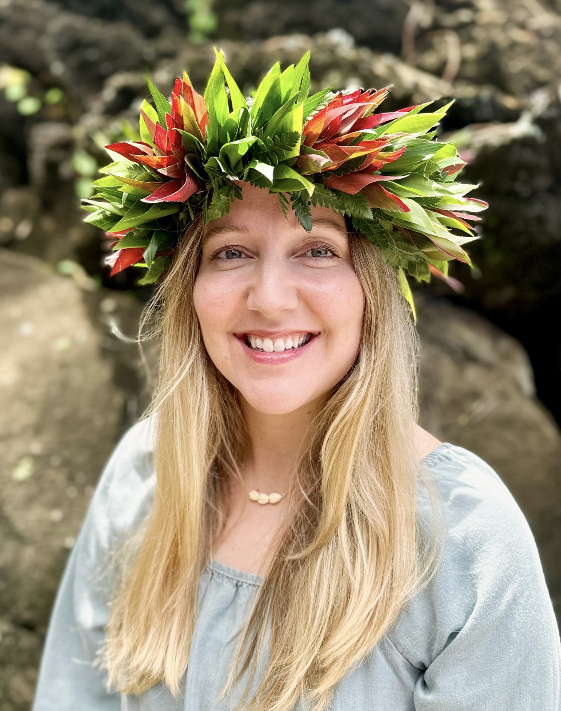
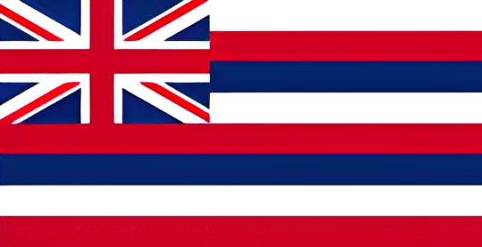

About Me
I have a family of 5 and I love traveling with them all over the United States. Last summer we traveled to Arizona, Colorado, Montana, Utah, and California. We also visit the islands in Hawaii. My other hobbies include reading 500 page novels, hiking, going to beach, and watching movies. I love doing Front End Development, I love seeing all the code rendered into the web page. It fuels my creative outlet.

Aloha from Hawaii
I have lived in Hawaii for 7 years now. I am originally from Utah and found my Hawaiian sweetheart when we were at college. Now we have 5 kids and explore all the Hawaiian Islands. There are pineapple farms, shrimp farms, macadamia nut farms. There are many water sports. We enjoy surfing, fishing, and snorkeling. As a 7 year transplant and my kids are native Hawaiian, we ask that we all have Aloha for each other and for the island. We take care of each other and our 'aina. Mahalo for being here!
